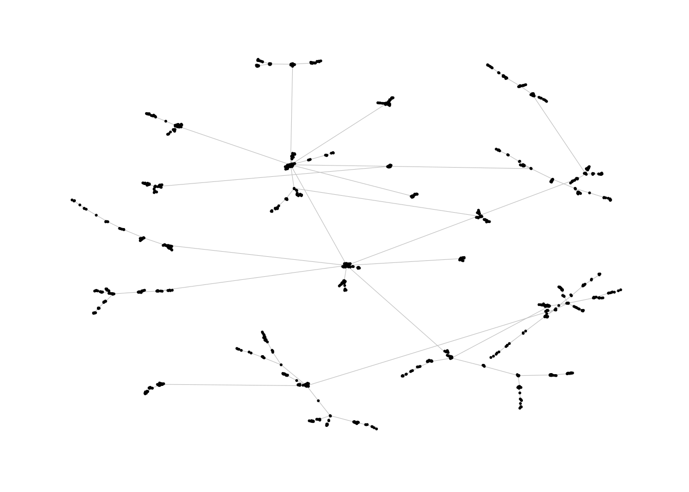
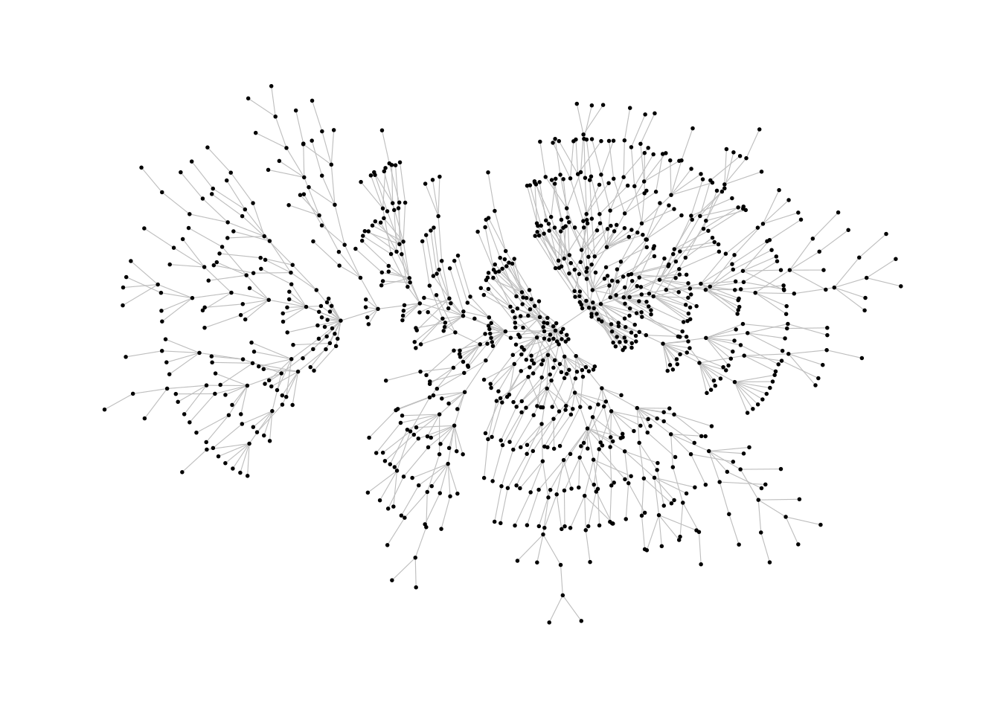
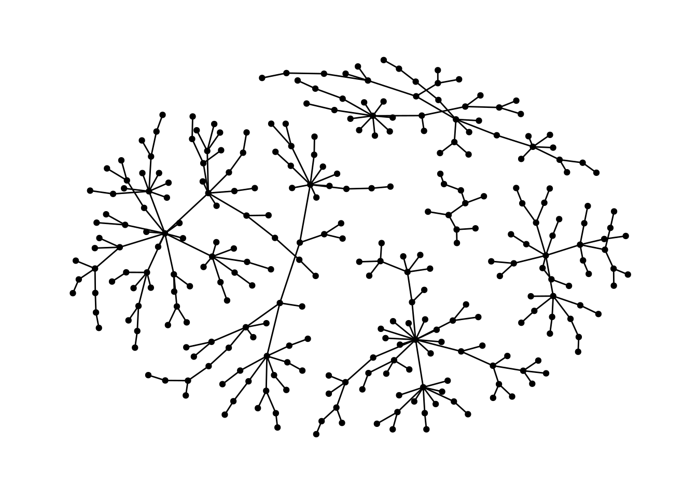
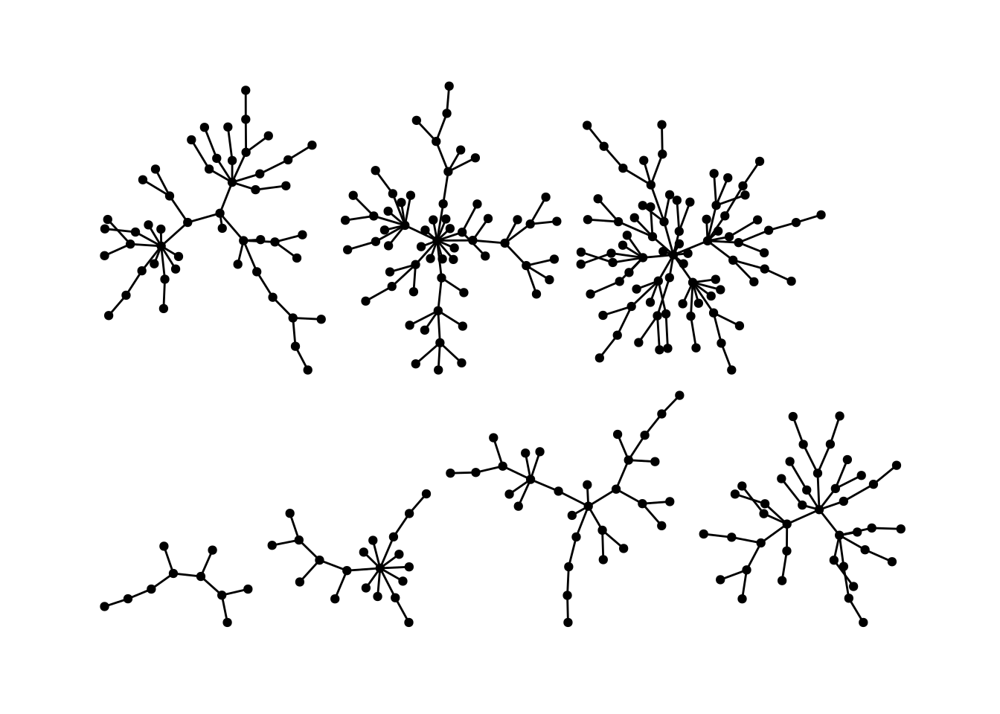
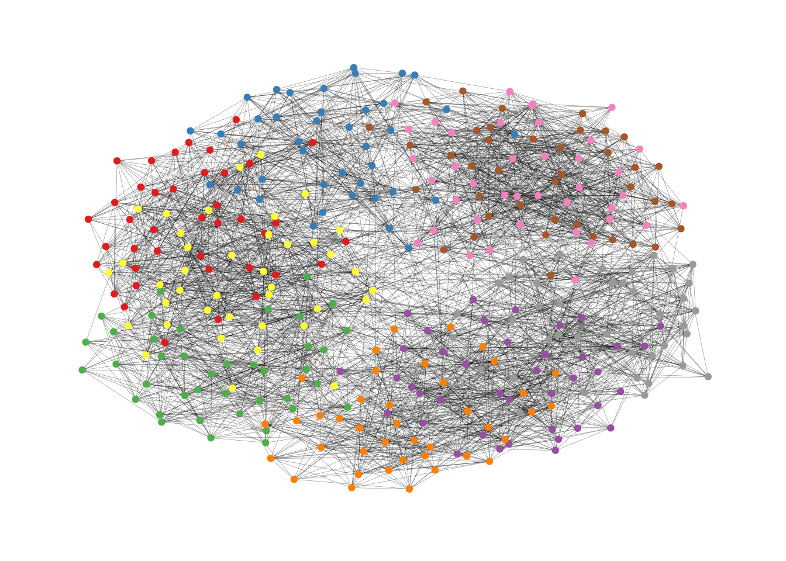
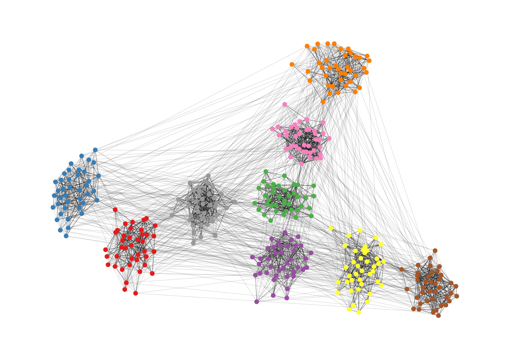
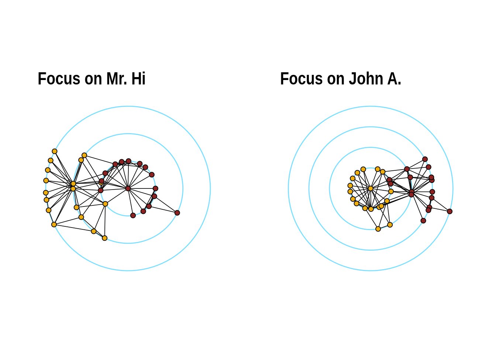

graphlayouts
An R package for network visualization
2018-09-12
The package implements the following algorithms:
- Stress majorization (Paper)
- Quadrilateral backbone layout (Paper)
- flexible radial layouts (Paper)
- sparse stress (Paper)
- pivot MDS (Paper)
- dynamic layout for longitudinal data (Paper)
- spectral layouts (adjacency/Laplacian)
- a simple multilevel layout
Install
# dev version
remotes::install_github("schochastics/graphlayouts")
#CRAN
install.packages("graphlayouts")Stress Majorization
This example is a bit of a special case since it exploits some weird issues in igraph.
library(igraph)
library(ggraph)
library(graphlayouts)
set.seed(666)
pa <- sample_pa(1000,1,1,directed = F)
ggraph(pa,layout = "nicely")+
geom_edge_link0(width=0.2,colour="grey")+
geom_node_point(col="black",size=0.3)+
theme_graph()
ggraph(pa,layout="stress")+
geom_edge_link0(width=0.2,colour="grey")+
geom_node_point(col="black",size=0.3)+
theme_graph()
Stress majorization also works for networks with several components. It relies on a bin packing algorithm to efficiently put the components in a rectangle, rather than a circle.
set.seed(666)
g <- disjoint_union(
sample_pa(10,directed = F),
sample_pa(20,directed = F),
sample_pa(30,directed = F),
sample_pa(40,directed = F),
sample_pa(50,directed = F),
sample_pa(60,directed = F),
sample_pa(80,directed = F)
)
ggraph(g,layout = "nicely") +
geom_edge_link0() +
geom_node_point() +
theme_graph()
ggraph(g, layout = "stress",bbox = 40) +
geom_edge_link0() +
geom_node_point() +
theme_graph()
Backbone Layout
Backbone layouts are helpful for drawing hairballs.
set.seed(665)
#create network with a group structure
g <- sample_islands(9,40,0.4,15)
g <- simplify(g)
V(g)$grp <- as.character(rep(1:9,each=40))
ggraph(g,layout = "stress")+
geom_edge_link0(colour=rgb(0,0,0,0.5),width=0.1)+
geom_node_point(aes(col=grp))+
scale_color_brewer(palette = "Set1")+
theme_graph()+
theme(legend.position = "none")
The backbone layout helps to uncover potential group structures based on edge embeddedness and puts more emphasis on this structure in the layout.
bb <- layout_as_backbone(g,keep=0.4)
E(g)$col <- F
E(g)$col[bb$backbone] <- T
ggraph(g,layout="manual",x=bb$xy[,1],y=bb$xy[,2])+
geom_edge_link0(aes(col=col),width=0.1)+
geom_node_point(aes(col=grp))+
scale_color_brewer(palette = "Set1")+
scale_edge_color_manual(values=c(rgb(0,0,0,0.3),rgb(0,0,0,1)))+
theme_graph()+
theme(legend.position = "none")
Radial Layout with Focal Node
The function layout_with_focus() creates a radial layout around a focal node. All nodes with the same distance from the focal node are on the same circle.
library(igraphdata)
library(patchwork)
data("karate")
p1 <- ggraph(karate,layout = "focus",focus = 1) +
draw_circle(use = "focus",max.circle = 3)+
geom_edge_link0(edge_color="black",edge_width=0.3)+
geom_node_point(aes(fill=as.factor(Faction)),size=2,shape=21)+
scale_fill_manual(values=c("#8B2323", "#EEAD0E"))+
theme_graph()+
theme(legend.position = "none")+
coord_fixed()+
labs(title= "Focus on Mr. Hi")
p2 <- ggraph(karate,layout = "focus",focus = 34) +
draw_circle(use = "focus",max.circle = 4)+
geom_edge_link0(edge_color="black",edge_width=0.3)+
geom_node_point(aes(fill=as.factor(Faction)),size=2,shape=21)+
scale_fill_manual(values=c("#8B2323", "#EEAD0E"))+
theme_graph()+
theme(legend.position = "none")+
coord_fixed()+
labs(title= "Focus on John A.")
p1+p2
Radial Centrality Layout
The function layout_with_centrality creates a radial layout around the node with the highest centrality value. The further outside a node is, the more peripheral it is.
library(igraphdata)
library(patchwork)
data("karate")
bc <- betweenness(karate)
p1 <- ggraph(karate,layout = "centrality", centrality = bc, tseq = seq(0,1,0.15)) +
draw_circle(use = "cent") +
annotate_circle(bc,format="",pos="bottom") +
geom_edge_link0(edge_color="black",edge_width=0.3)+
geom_node_point(aes(fill=as.factor(Faction)),size=2,shape=21)+
scale_fill_manual(values=c("#8B2323", "#EEAD0E"))+
theme_graph()+
theme(legend.position = "none")+
coord_fixed()+
labs(title="betweenness centrality")
cc <- closeness(karate)
p2 <- ggraph(karate,layout = "centrality", centrality = cc, tseq = seq(0,1,0.2)) +
draw_circle(use = "cent") +
annotate_circle(cc,format="scientific",pos="bottom") +
geom_edge_link0(edge_color="black",edge_width=0.3)+
geom_node_point(aes(fill=as.factor(Faction)),size=2,shape=21)+
scale_fill_manual(values=c("#8B2323", "#EEAD0E"))+
theme_graph()+
theme(legend.position = "none")+
coord_fixed()+
labs(title="closeness centrality")
p1+p2
Large graphs
graphlayouts implements two algorithms for visualizing large networks (<100k nodes). layout_with_pmds() is similar to layout_with_mds() but performs the multidimensional scaling only with a small number of pivot nodes. Usually, 50-100 are enough to obtain similar results to the full MDS.
layout_with_sparse_stress() performs stress majorization only with a small number of pivots (~50-100). The runtime performance is inferior to pivotMDS but the quality is far superior.
A comparison of runtimes and layout quality can be found in the wiki
tl;dr: both layout algorithms appear to be faster than the fastest igraph algorithm layout_with_drl().
Below are two examples of layouts generated for large graphs using layout_with_sparse_stress()
 A retweet network with 18k nodes and 61k edges
A retweet network with 18k nodes and 61k edges
 A co-citation network with 12k nodes and 68k edges
A co-citation network with 12k nodes and 68k edges